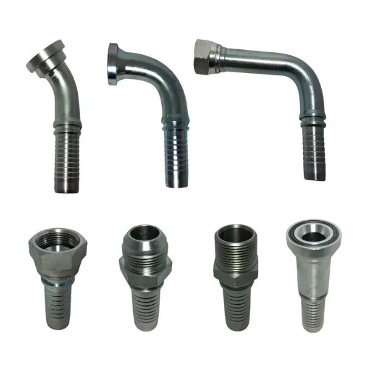
Linha hidráulica
Conexões, componentes, tubos e itens técnicos para sistemas hidráulicos.
Cotar linha hidráulicaLinhas para empresas, profissionais, oficinas, construção civil e equipes técnicas. Esta página não é um catálogo de e-commerce: é um guia para cotação consultiva.

Conexões, componentes, tubos e itens técnicos para sistemas hidráulicos.
Cotar linha hidráulica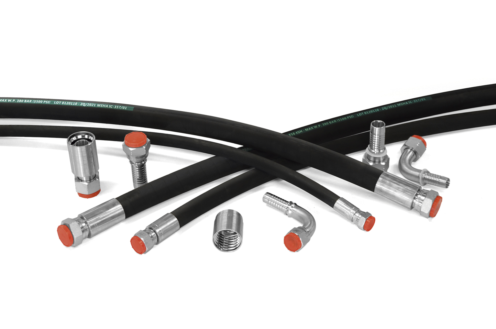
Montagem e fabricação própria sob demanda para reposição e manutenção.
Ver mangueiras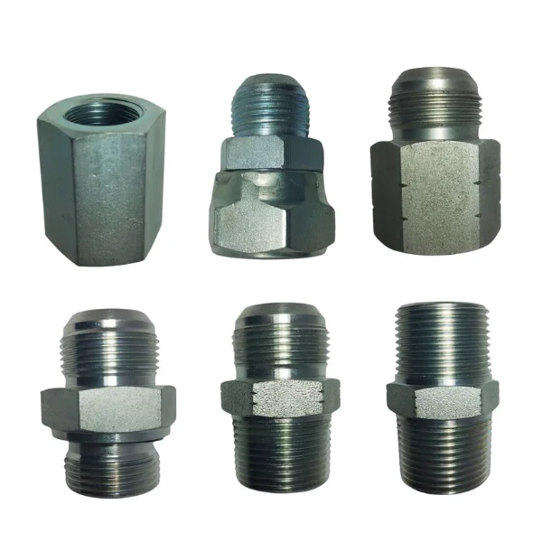
Adaptadores para adequação, reposição e montagem de sistemas hidráulicos.
Cotar adaptadores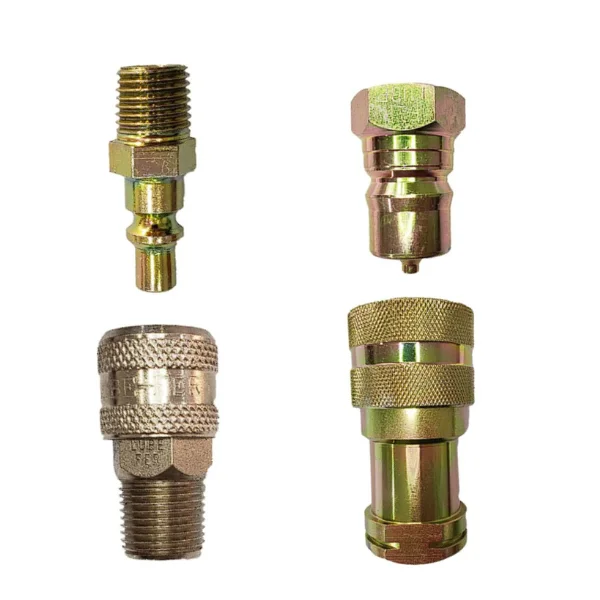
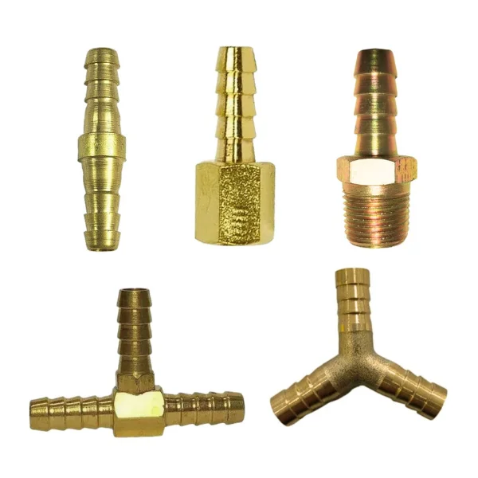
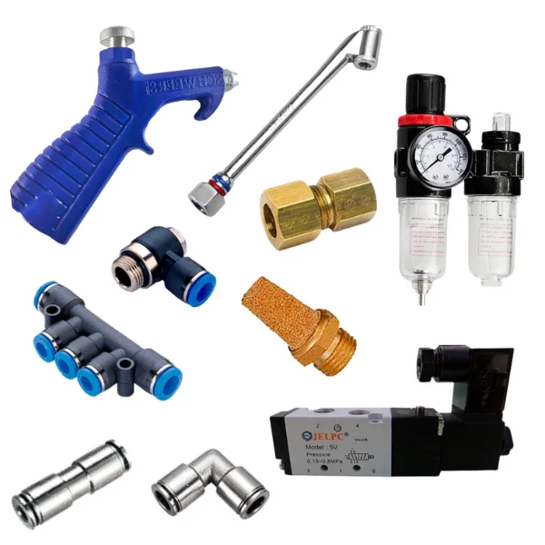
Componentes para sistemas de ar comprimido, máquinas e equipamentos.
Cotar pneumática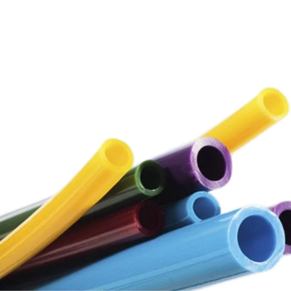
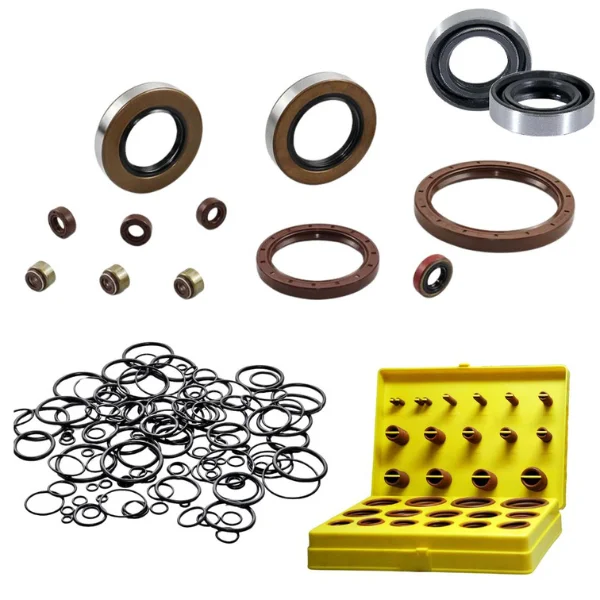
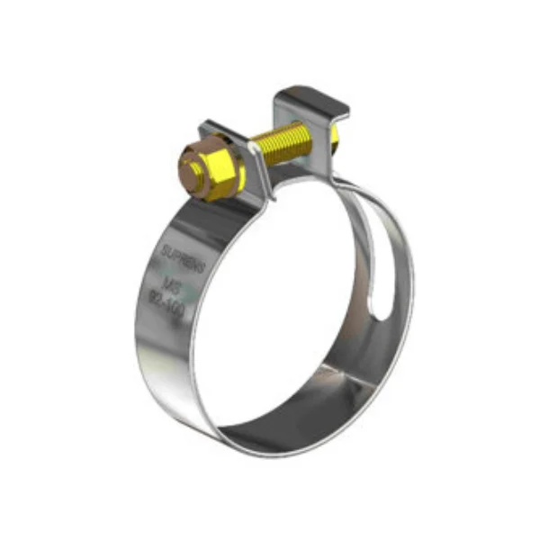
Fixação para mangueiras, tubos, sistemas hidráulicos, pneumáticos e instalações.
Cotar abraçadeiras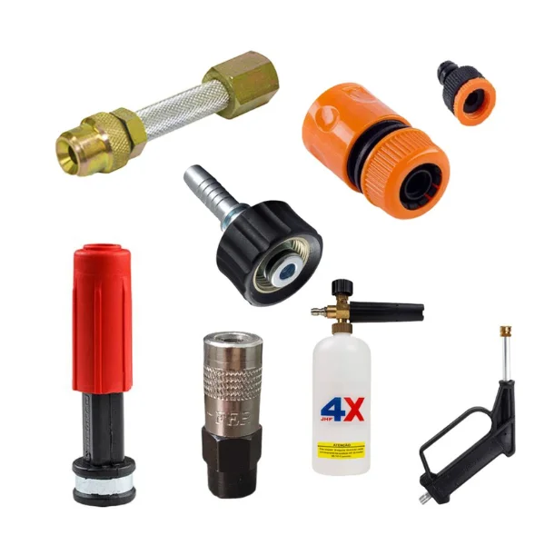
Produtos e acessórios de apoio para limpeza técnica, oficinas e operação diária.
Cotar lava-jato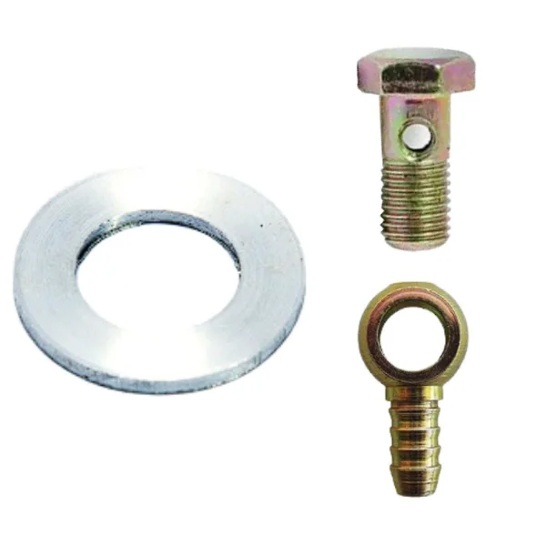
Itens de apoio para manutenção e operação ligada a veículos e equipamentos diesel.
Cotar diesel